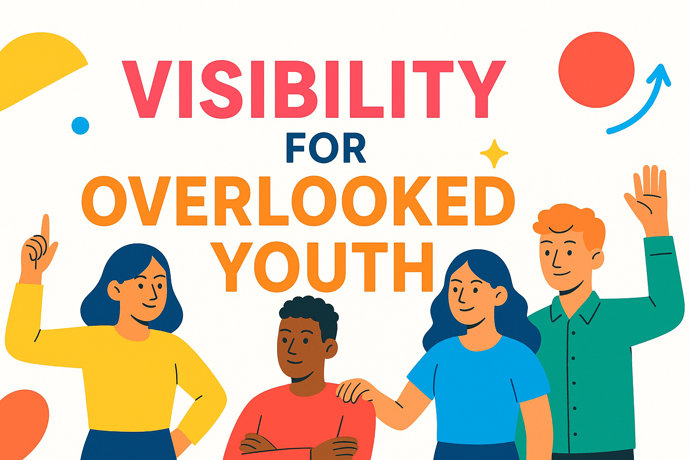
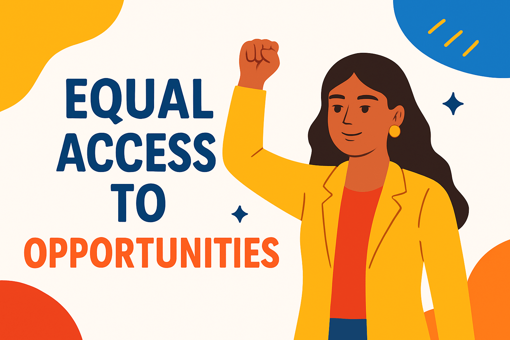
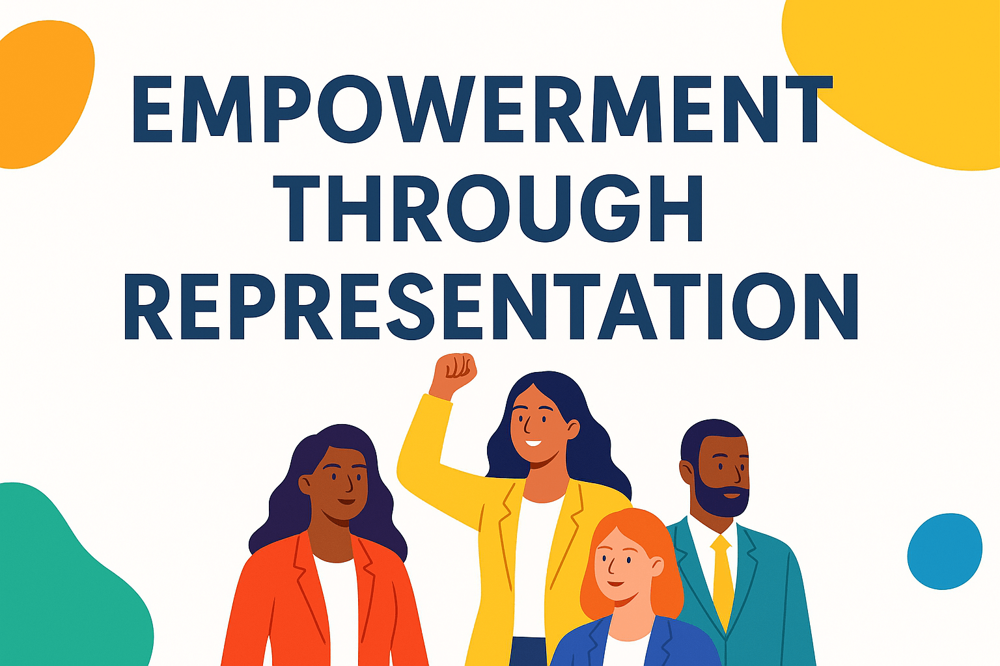
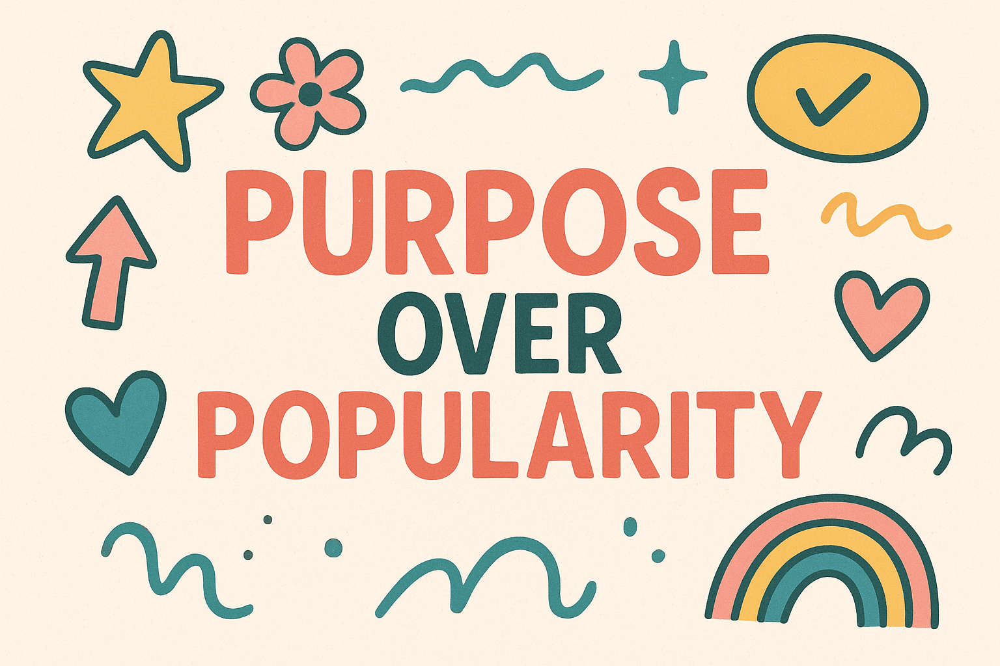
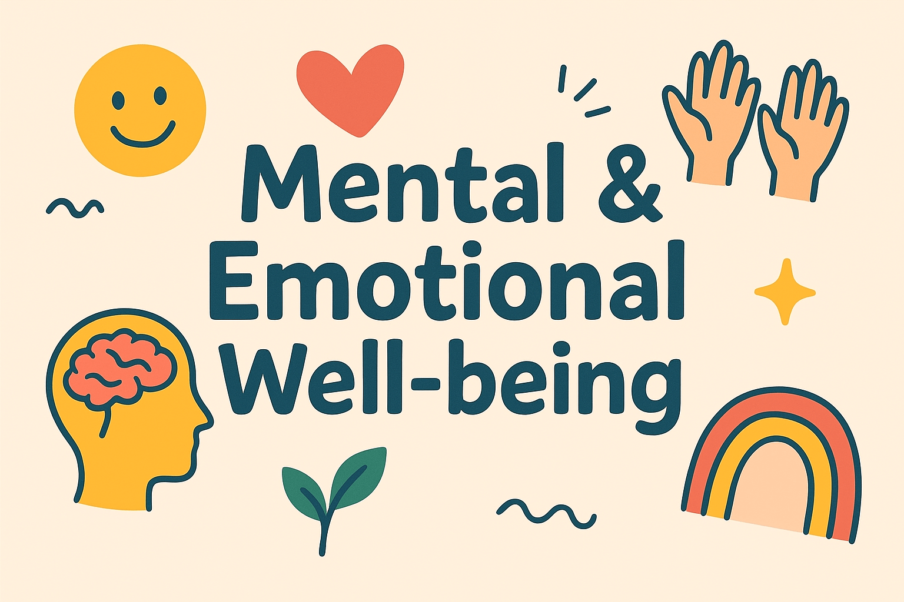

For us, standing for a cause isn’t just about saying the right things. It’s about living them — with purpose,
with heart, and with a deep belief that change begins when you choose to see what others ignore. We don’t just
stand for a hashtag. We stand for the ones who were never given the mic. We stand for The Unseen Generation.
Born from a lived experience. To be unseen is not to be unworthy. To be unheard is not to be voiceless.
To be underestimated is not to be incapable. And so, what we stand for is simple: We see them. We hear them.
We rise with them. Because this generation may be unseen, but we will not stay silent.

Visibility for Overlooked Youth
So many young people are doing their best, but no one sees them. Whether it’s because they live in rural
communities, don’t have platforms, or don’t fit the “popular” mold — they are left out of the spotlight. We
fight for those whose greatness is hidden because of where they come from, how quiet they are, or how
different they feel. We’re here to say: you matter, you are enough, and we see you.

Equal Access to Opportunities
Access shouldn’t depend on your location, school, or background — but unfortunately, it does. Moving from
Gauteng to QwaQwa revealed the shocking difference in access to mentorship, career guidance, events, and even
basic exposure. This cause fights for fair chances: because every young person deserves the tools to grow, no
matter their circumstances. Whether that means workshops, school visits, digital resources, or partnerships —
we will bridge the gap.

Empowerment Through Representation
When youth never see people like them in leadership, media, or success stories — it’s easy to believe they’re
not “enough.” That’s why we’re building platforms for the unseen: so that rural kids, dreamers, and the
“underdogs” can see people like them doing big things. We want to break stereotypes and show that you don’t
have to be loud, rich, or perfect to lead — you just have to be real.

Purpose Over Popularity
In a world that tells young people to chase likes, trends, and perfection — we encourage them to chase meaning instead.
This cause is about guiding youth to focus on who they are becoming, not just how they’re seen online.
It’s about reminding them that healing, growth, and impact matter more than applause.
We’re raising a generation that chooses purpose over pressure.

Mental & Emotional Well-being
Being young isn’t easy — especially when you feel unseen, unheard, or misunderstood.
Many young people are dealing with anxiety, low self-worth, identity struggles, and silent pain. We believe in normalizing conversations about feelings, healing, and self-love.
Through Empowerment Fridays and open dialogue, we’re building a generation that knows:
It’s okay to feel, it’s okay to struggle, and it’s more than okay to ask for help.